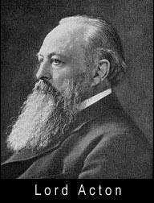
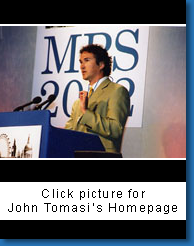

|
The Political Theory Project is a new, interdisciplinary research
initiative housed within Brown's Department of Political Science.
The mission of the Political Theory Project is to invigorate and
deepen the discussion of normatively charged issues at Brown
University, and beyond. The distinctive approach of the Political
Theory Project is to ground normative theorizing about politics in the
realities of economic and social life. In this way, the Political
Theory Project seeks to bridge humanistic and social scientific
perspectives on political thought. The Political Theory Project
sponsors a variety of programs: new courses for undergraduates, public
lectures, academic conferences, research fellowships for graduate
students, support for faculty research, and postdoctoral fellowships. |
|

|
|
|
These remarks are taken from the introduction by John Tomasi, the Stanley J. Bernstein Assistant Professor of Social Science-International Affairs, at a debate between author Dinesh D'Souza and law professor Frank Wu on Nov. 8, 1997. The topic was affirmative action. However, Tomasi addressed the very nature of debate and the dueling expressions of character on the Brown campus.
Debating affirmative action, in Asia America as elsewhere, requires that we take up a series of difficult, gut-wrenching problems: problems about merit and deserts, about democracy and opportunity, about the role of public institutions in a society that aims to be free, problems about social diversity...more |
|
|
 |
| For questions and comments contact the Webmaster |
|